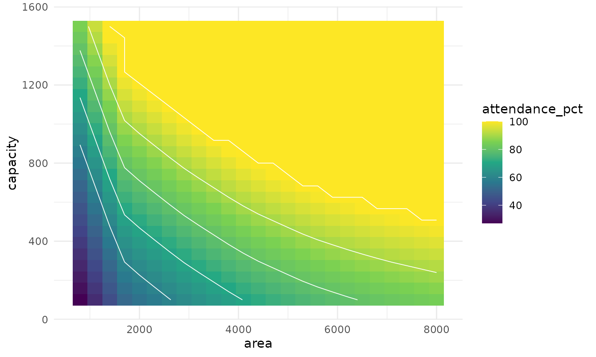
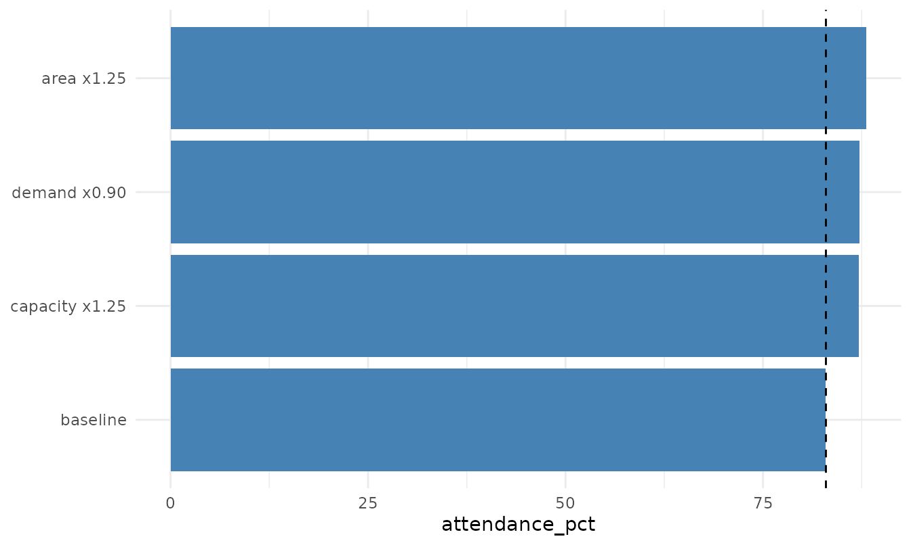
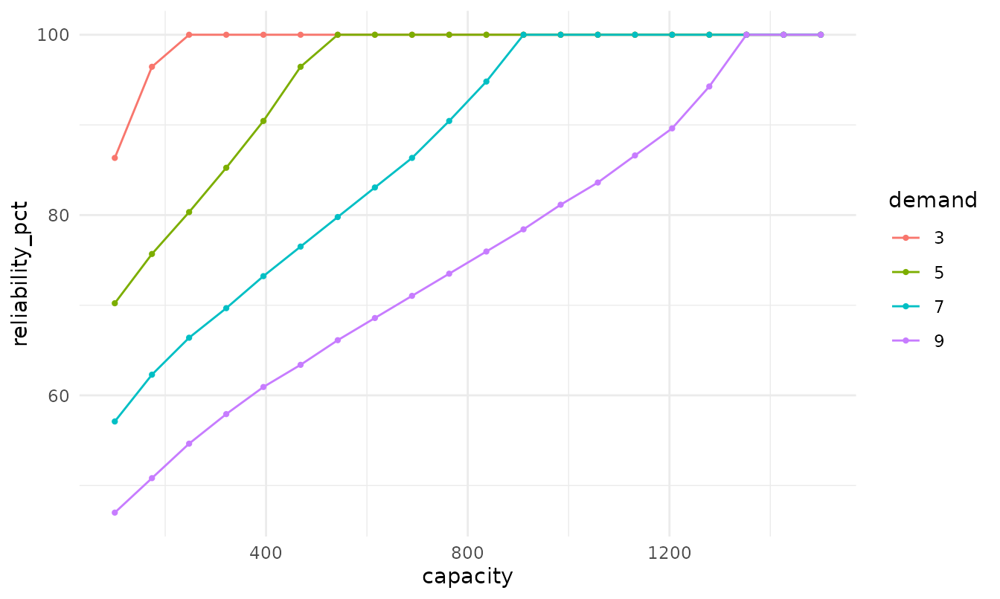
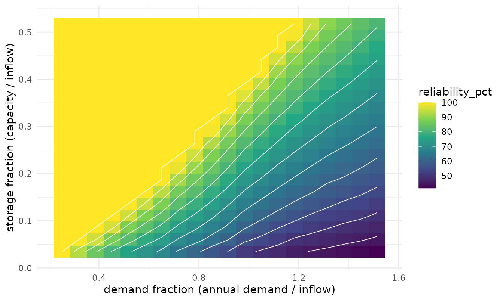
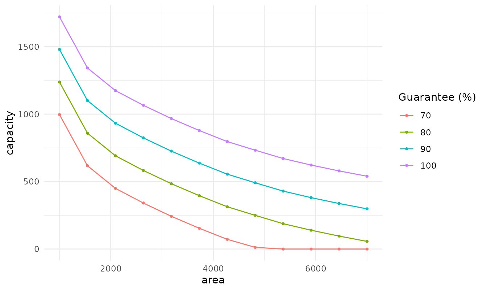
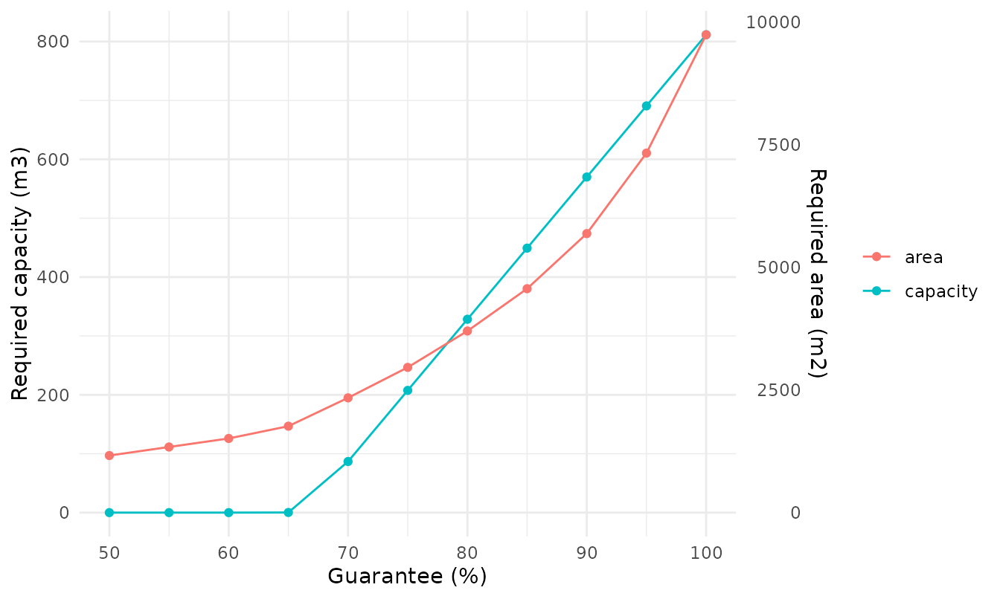
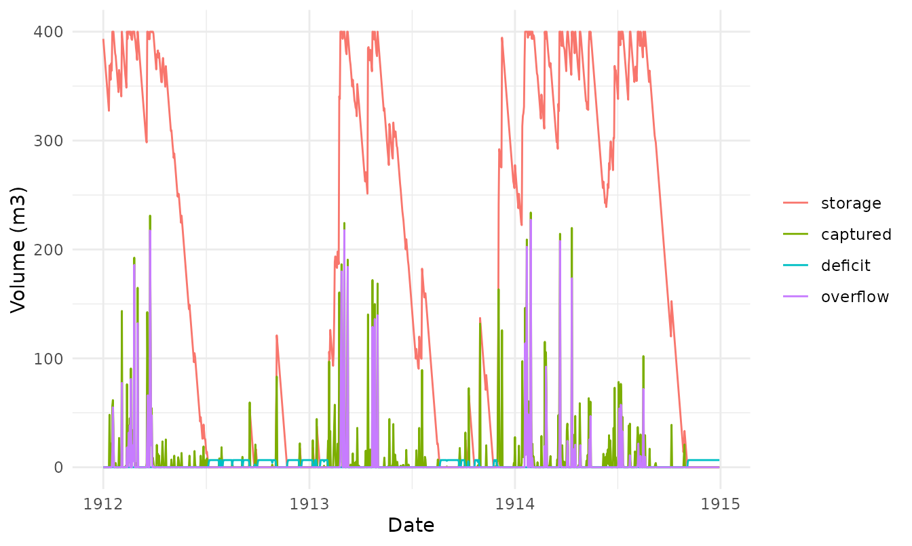
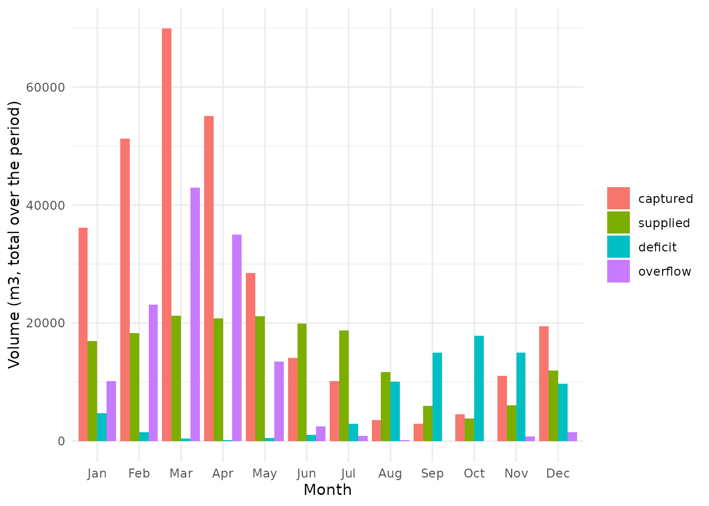
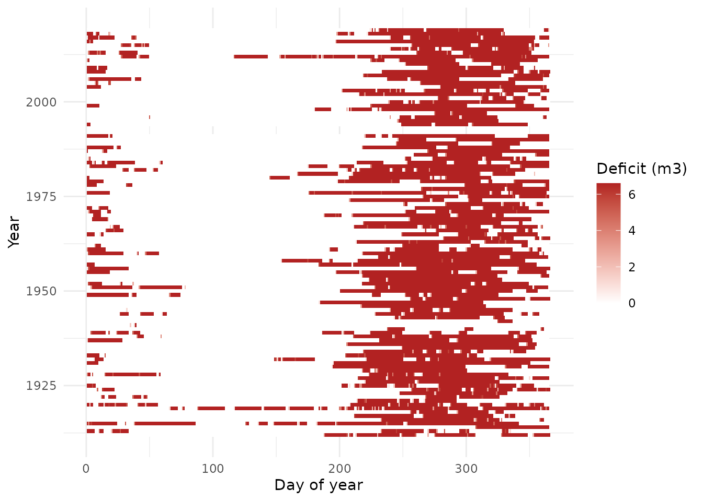
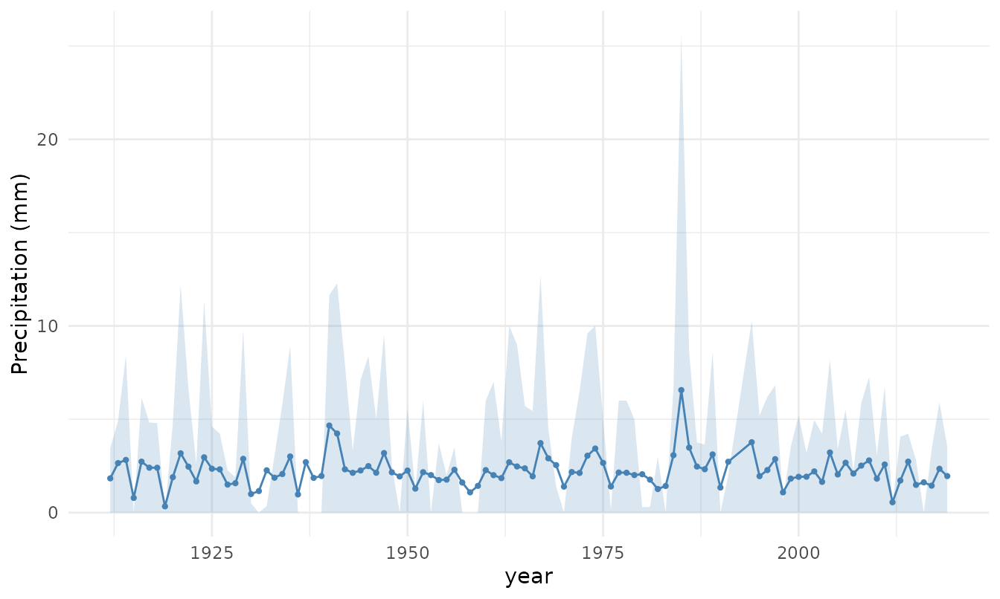

Analysis and sizing: trade-offs, curves and diagnostics
Source:vignettes/analysis-and-sizing.Rmd
analysis-and-sizing.RmdThe daily simulation (rh_simulate()) is the engine; the
functions below sweep its parameters to build decision tools. Two
reliability metrics are available throughout and are interchangeable via
the metric argument: "attendance_pct"
(volumetric: share of demand volume met) and
"reliability_pct" (temporal: share of days without a
shortfall).
Two-parameter grids run hundreds of simulations. For interactive exploration use
climatology = TRUE, which simulates on the day-of-year mean (about 70x faster); confirm final numbers on the full series.
Roof, tank or demand: comparing the levers
rh_grid() sweeps two levers;
rh_plot_tradeoff() draws the resulting surface with
iso-performance contours. Here, area vs capacity at a fixed demand:
g <- rh_grid(
p, base = list(demand = 6.6, runoff = 0.85, efficiency = 1),
x = "area", x_values = seq(800, 8000, length.out = 25),
y = "capacity", y_values = seq(100, 1500, length.out = 25),
metrics = "attendance_pct", dates = d, climatology = TRUE
)
rh_plot_tradeoff(g, breaks = c(60, 70, 80, 90, 100))
Reading across the contours shows whether enlarging the roof (move right) or the tank (move up) reaches a target guarantee with less change.
From a single operating point, rh_plot_levers() compares
the gain from each lever applied alone (here +25% area, +25% capacity,
-10% demand):
rh_plot_levers(
p, base = list(demand = 6.6, area = 4170, capacity = 400,
runoff = 0.85, efficiency = 1),
dates = d, climatology = TRUE
)
Storage-Yield-Reliability and the guarantee frontier
Reliability against capacity, one line per demand (the classic SYR view):
gs <- rh_grid(
p, base = list(area = 4170, runoff = 0.85, efficiency = 1),
x = "capacity", x_values = seq(100, 1500, length.out = 20),
y = "demand", y_values = c(3, 5, 7, 9),
metrics = "reliability_pct", dates = d, climatology = TRUE
)
rh_plot_syr(gs)
The zero-deficit frontier (guaranteed demand for each capacity):
rh_guarantee_curve(
p, base = list(area = 4170, runoff = 0.85, efficiency = 1),
vary = "capacity", values = seq(100, 1000, by = 150), target = "demand",
dates = d, climatology = TRUE
)
#> capacity demand
#> 1 100 2.150582
#> 2 250 3.434588
#> 3 400 4.422881
#> 4 550 5.277596
#> 5 700 6.049458
#> 6 850 6.779706
#> 7 1000 7.459210A non-dimensional design curve (transferable across sites): demand and capacity are divided by the mean annual inflow.
n_years <- length(unique(format(d, "%Y")))
inflow <- sum(rh_available_volume(p, area = 4170, runoff = 0.85, efficiency = 1)) / n_years
gd <- rh_grid(
p, base = list(area = 4170, runoff = 0.85, efficiency = 1),
x = "demand", x_values = seq(2, 12, length.out = 20),
y = "capacity", y_values = seq(100, 1500, length.out = 20),
metrics = "reliability_pct", dates = d, climatology = TRUE
)
rh_plot_design_curve(gd, annual_inflow = inflow)
Design curves: the stage-area-volume analogue
Iso-guarantee curves relate two levers at fixed guarantee levels (here area vs the reservoir capacity needed, at fixed demand): along each line you trade roof for tank without changing the guarantee.
iso <- rh_iso_curve(
p, base = list(demand = 6.6, runoff = 0.85, efficiency = 1),
x = "area", x_values = seq(1000, 7000, length.out = 12),
y = "capacity", levels = c(70, 80, 90, 100),
dates = d, climatology = TRUE
)
rh_plot_iso(iso)
The closest analogue to the reservoir stage-area-volume curve puts the guarantee on the x-axis, with the required capacity and area on a dual y-axis.
rc <- rh_resource_curve(
p, base = list(demand = 6.6, area = 4170, capacity = 400,
runoff = 0.85, efficiency = 1),
levels = seq(50, 100, by = 5), dates = d, climatology = TRUE
)
rh_plot_resource_curve(rc)
Diagnostics
sim <- rh_simulate(p, demand = 6.6, area = 4170, capacity = 400,
runoff = 0.85, efficiency = 1)Reservoir behaviour over the first three years:
n <- 3 * 365
sim3 <- rh_simulate(p[seq_len(n)], demand = 6.6, area = 4170, capacity = 400,
runoff = 0.85, efficiency = 1)
rh_plot_behaviour(sim3, dates = d[seq_len(n)])
Monthly water balance and the failure calendar (when shortfalls happen):
rh_plot_monthly_balance(sim, dates = d)
rh_plot_failure_calendar(sim, dates = d)
Rainfall variability and scenarios
The spread of annual rainfall (mean with 10th-90th percentile band):
rh_plot_spread(rh_series_spread(precip_pi, by = "year"))
Stress test by ordering the years dry-to-wet, and compare to the chronological series:
dry_first <- rh_scenarios_from_years(precip_pi, order = "increasing")
sim_stress <- rh_simulate(dry_first$value, demand = 6.6, area = 4170,
capacity = 400, runoff = 0.85, efficiency = 1)
rh_compare(list(chronological = sim, dry_to_wet = sim_stress))[
, c("name", "attendance_pct", "reliability_pct", "deficit_total")]
#> name attendance_pct reliability_pct deficit_total
#> 1 chronological 69.08957 68.34125 78984.07
#> 2 dry_to_wet 69.02962 68.25085 79137.25